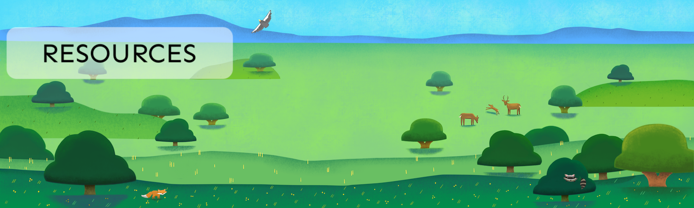

Open source resources developed by the Openscapes community.


Open source resources developed by the Openscapes community.
See also our media page for publications, slides, and videos describing our work.
Openscapes Champions Lesson Series
The Openscapes Champions Lesson Series is our open source curriculum we use to teach Champions Cohorts, and you can use it too.
Learn more on the Champions Program webpage, and read about the experiences of our past and current Champions cohorts on our blog.
Cite as: Lowndes & Robinson (2022). Openscapes Champions Lesson Series (2022.12). Zenodo. https://doi.org/10.5281/zenodo.7407247

NASA Earthdata Cloud Cookbook
The NASA Earthdata Cloud Cookbook is a collection of common tutorials co-created and co-taught by NASA Openscapes Mentors, and it is an open source curriculum you can use too!
Learn more on the NASA Openscapes website, and read about the experiences of our past and current NASA Openscapes work on our blog.
Cite as: NASA Openscapes Mentors, Robinson, Lowndes (2023). NASA EarthData Cloud Cookbook (v2023.03). Zenodo. https://doi.org/10.5281/zenodo.7786711

Openscapes Approach Guide
The Openscapes Approach Guide is our “lab manual”, an attempt to codify our approach to onboard ourselves and new team members to how we work. It is an open source resource you can use too.
Cite as: Openscapes Core Team, Butland, Robinson, Lowndes. (2023). Openscapes Approach Guide (v2023.06). Zenodo. https://doi.org/10.5281/zenodo.8034313

NOAA FISHERIES RESOURCE BOOK
California Water Boards Resource Book
Our work with NASA and Posit (formerly RStudio) led us to keynote the global launch of Quarto in 2022 (Cetinkaya-Rundel & Lowndes). NASA Openscapes was the first Quarto external users.
Making shareable documents with Quarto